Group chats
Up to 20 people in one conversation, with receipts from everyone.
On the surface, a fast, colourful notepad: lists, journals, mind maps, sketches and voice notes, synced between your phone and your PC. Underneath, behind a gesture only you know: an encrypted vault for your photos, and a private chat with its own locks.
Simple on the outside. A whole world when you know where to look.
Text, checklists, journals with photos and videos, mind maps, sketches and voice recordings, each with a live preview on its card.
Sign in with Google or email and your notes sync between your phones and your PC. Photos and recordings go to your own Google Drive.
Swipe left on your notes and hold. An encrypted gallery appears, behind a PIN, password or pattern.
Swipe right and hold. A private messenger with its own locks, its own vaults, and photos only your contact can open.
Vault media is AES-256 encrypted on your phone, and backups check themselves before they say "saved".
Notes+ for Windows: the same notes and the same hidden worlds, on a big screen with a real keyboard.
Tap New and pick what you're making. Every note becomes a card that previews what's inside, so the grid reads at a glance.
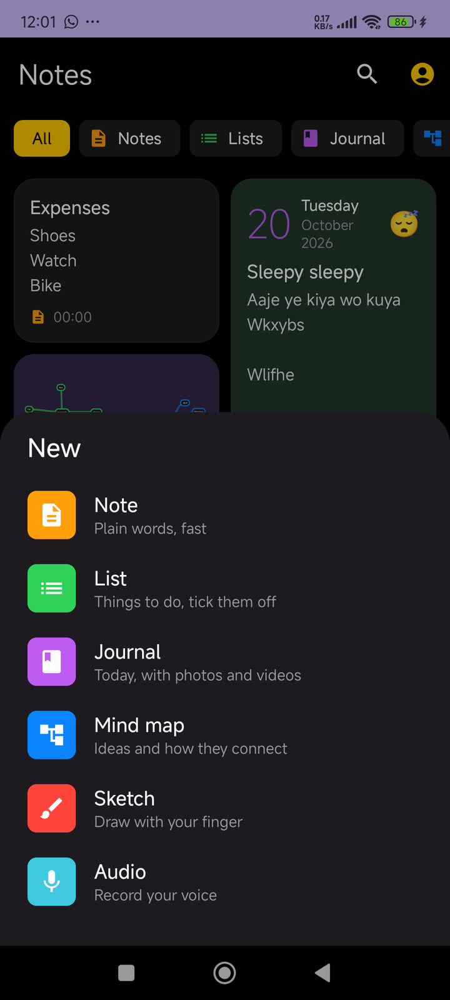
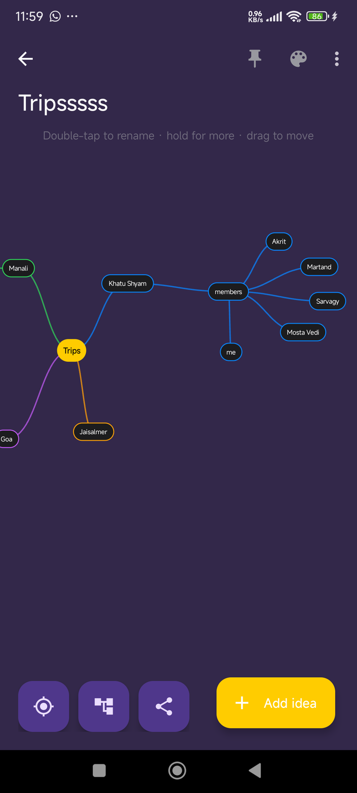
Accounts are optional. Sign in and your notes follow you, phone to phone and phone to PC; stay signed out and nothing ever leaves your device.
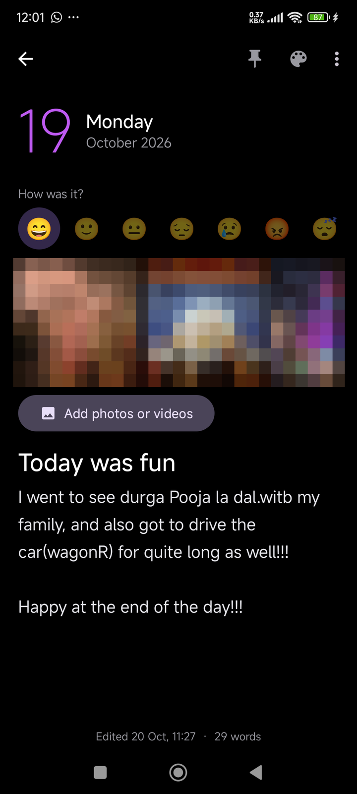
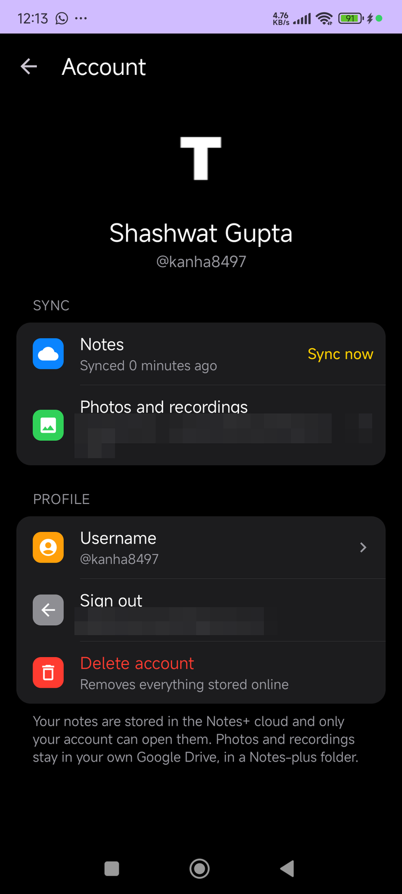
A lock screen appears that wasn't there a second ago. Behind it, your photos and videos, encrypted with AES-256 the moment they enter.
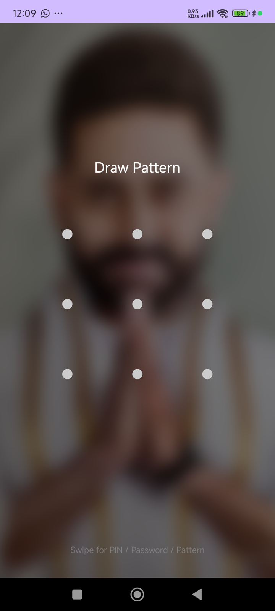
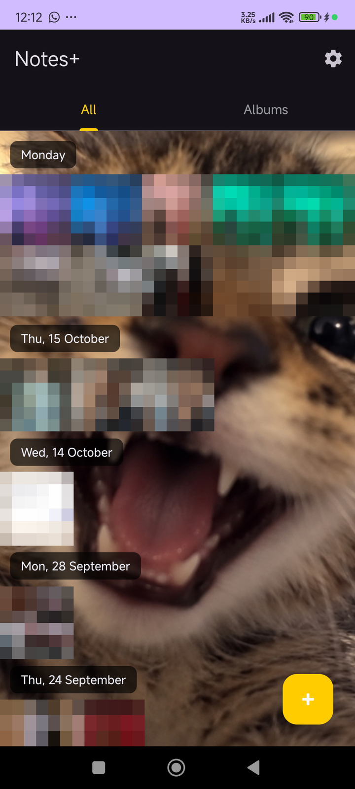
A second lock, a second world. The chat and the vault never mention each other.
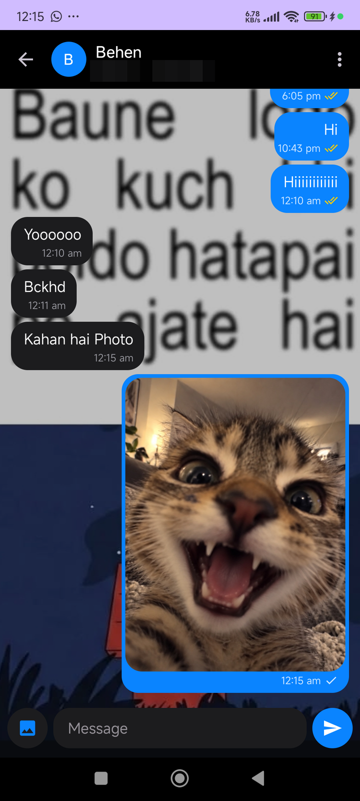
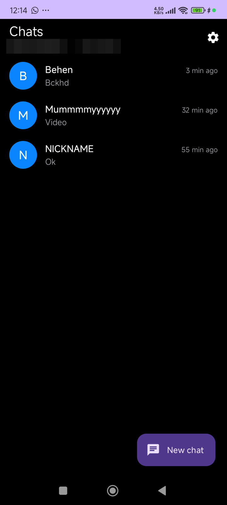
Folders and an archive, links anyone can open, many windows on Windows, and the web catching up with the apps.
New in 12, still here:
The same Notes+, on a big screen with a real keyboard. Sign in with the same account and your notes move between your phone and your PC by themselves.
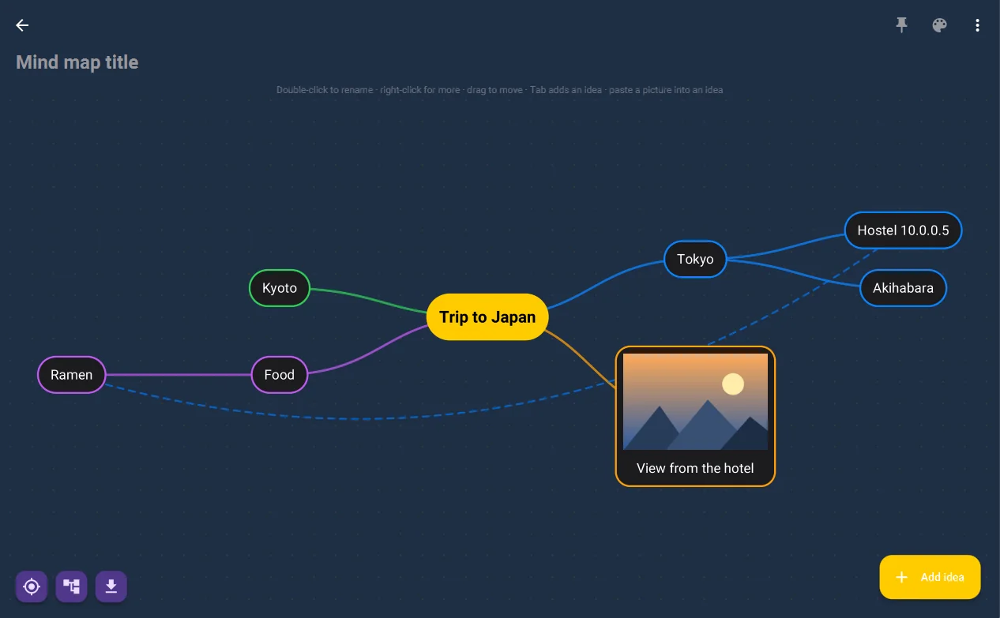
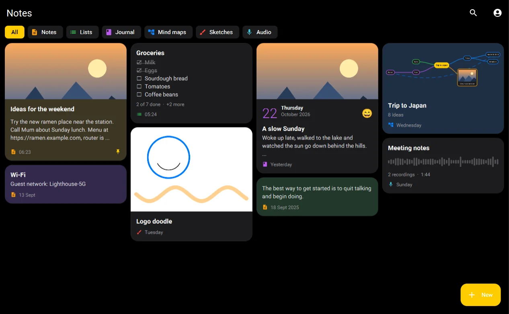
From the overworld to the deepest vault. Tap any screen to look closer.
Notes as cards, each previewing what's inside
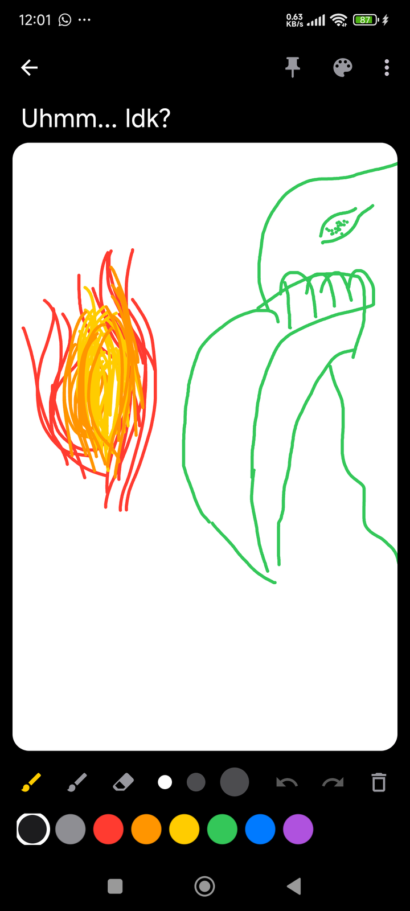
Sketches with pens, markers and an eraser
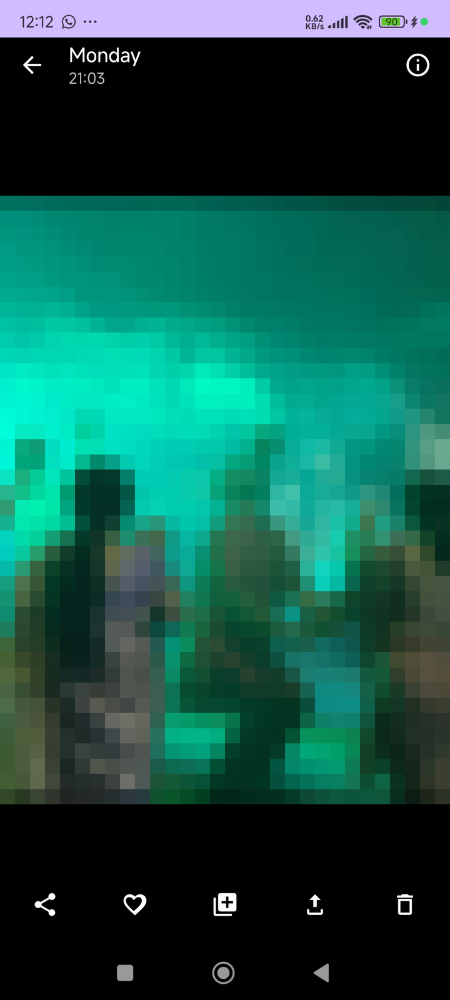
Full-screen viewer with zoom and video
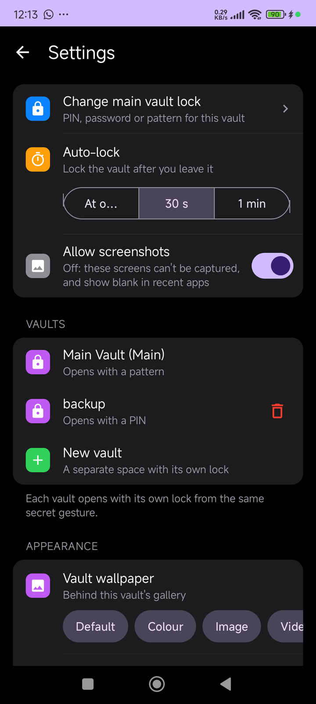
Verified backups, local and on Drive
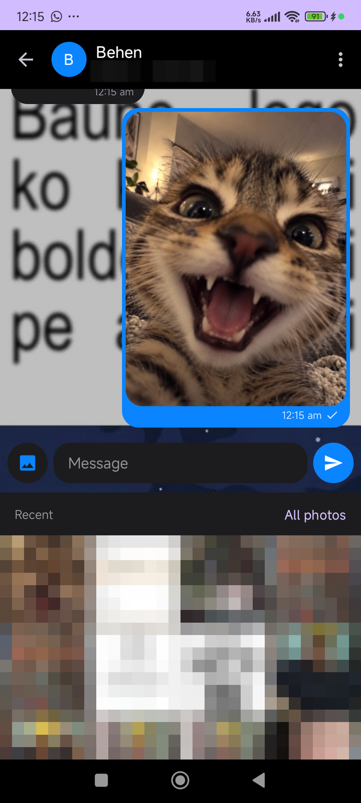
Recent photos right where the keyboard was
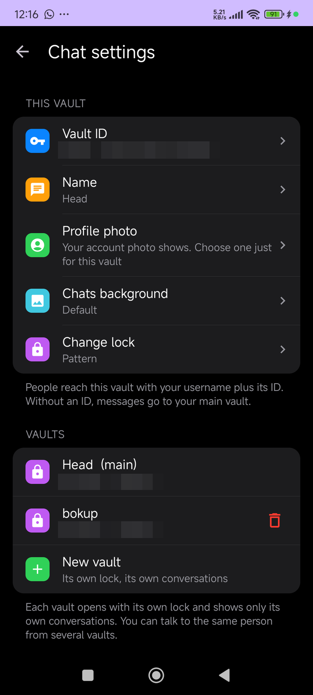
Chat vaults, each with its own ID and lock
Mind maps that tidy, fold and link
Ticks, encrypted photos, shared backgrounds
Up to 20 people in one conversation, with receipts from everyone.
Share a list or a mind map with up to 20 people and edit it together.
Hold to talk in chat, with a waveform to follow.
Photos and videos that disappear after they're opened, from everywhere.
Free on Android and Windows. No account needed to start, no ads, no trackers.